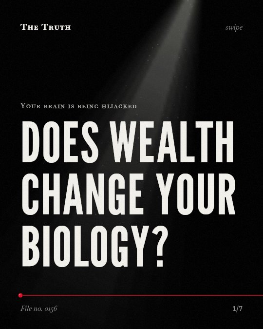

Your brain is being hijacked
Does wealth change your biology?

High income does not biologically prime you for risk.
The evidence is mixed and does not provide a direct link to biological priming for risk-taking. High socioeconomic status is linked to specific neural responses regarding reputation.
Supported. At least one solid peer-reviewed study. The evidence is mixed.
What the research found
Minimal age-related differences are observed in the ventral striatum of adolescent rodents, which is a focal point of developmental studies.
“Surprisingly, minimal age related differences are observed in ventral striatum, which has been a focal point of developmental studies.”
Study, 2014. Simon & Moghaddam, Developmental Cognitive Neuroscience.
Early life stress from childhood poverty and maltreatment is linked to a deficit in reward sensitivity.
“Reward processing has received less attention, but here the evidence suggests a deficit in reward sensitivity.”
Study, 2019. Herzberg & Gunnar, NeuroImage.
Individuals with high socioeconomic status showed a larger P3 amplitude when they had a greater motivation for their reputation while being observed.
“Additionally, individuals with high SES exhibited greater reputational motivation when observed, as indicated by larger P3 amplitude.”
Experiment, 2024. Zhong et al., Frontiers in Neuroscience.
Adolescent rats show differences in reward processing in the orbitofrontal cortex and dorsal striatum compared to adult rats.
“These include differences in reward processing between adolescent and adult rats in orbitofrontal cortex and dorsal striatum.”
Study, 2014. Simon & Moghaddam, Developmental Cognitive Neuroscience.
The brain uses different topological structures to support the effects of reward, positive emotion, and negative emotion processing.
“The results revealed that interaction between the Default Mode Network, Frontoparietal, Dorsal Attention, and Salience networks engaged distinct topological structures to support the effects of reward, positive and negative emotion processing.”
Experiment, 2022. Yankouskaya et al., Frontiers in Systems Neuroscience.
Reward processing is shaped by different forces.
Your brain uses different topological structures for rewards and emotions. Reward sensitivity is linked to age, early life stress from poverty, and distinct brain networks.
Your biology is a map of your history.
That may be why your responses to rewards are not just personal choices. They are shaped by early life stress and the specific ways your brain is wired to process status.
This part is our reading of the evidence, not a finding.
The weight of a public gaze.
You sit in a glass office. You feel the pressure of others watching your every move. Your brain reacts to the threat of losing your standing in the room.
The honest summary
The evidence shows that socioeconomic status influences specific psychological motivations like reputation, but it does not provide a direct link to biological priming for risk-taking.
The sources do not contain any data specifically measuring risk-taking behaviors in high-income individuals.
What history shaped your reward system?
Sources
- Bowei Zhong, Nana Niu, Jin Li et al. (2024). Social observation modulates the influence of socioeconomic status on pro-environmental behavior: an event-related potential study. Frontiers in Neuroscience. Experiment, cited 12 times.
- Ala Yankouskaya, Toby Denholm-Smith, Dewei Yi et al. (2022). Neural Connectivity Underlying Reward and Emotion-Related Processing: Evidence From a Large-Scale Network Analysis. Frontiers in Systems Neuroscience. Experiment, cited 19 times.
- Max P. Herzberg, Megan R. Gunnar (2019). Early life stress and brain function: Activity and connectivity associated with processing emotion and reward. NeuroImage. Study, cited 234 times.
- Nicholas W. Simon, Bita Moghaddam (2014). Neural processing of reward in adolescent rodents. Developmental Cognitive Neuroscience. Study, cited 58 times.
Also read for this file, not quoted
- Mnih et al. (2015). Human-level control through deep reinforcement learning.
- Lutz & Widmer (2014). What can the monetary incentive delay task tell us about the neural processing of reward and punishment?.
This file was researched and drafted by software, then checked by rules a model cannot talk its way around: each quote above was matched word for word against the paper, and every number had to appear in it. How files are made.